In this section, we introduce a class of cocartesian fibrations called directed univalent cocartesian fibrations. The guiding idea is that directed univalence identifies morphisms in \(U\) with functors between the \(U\)-small categories classified by their source and target, compatibly in families.
To formulate this precisely, we fix a cocartesian fibration \(\pi\colon U_{\bullet} \to U\). We first define \(U\)-small cocartesian fibrations and construct a category classifying cocartesian functors between them. We then use straightening over \([1]\) to define directed univalence.
8.3.1 Small cocartesian fibrations
We start by defining what it means for a cocartesian fibration to be ‘small’, and by introducing various categories that classify small cocartesian fibrations. Throughout this section, we fix a cocartesian fibration \(\pi\colon U_{\bullet} \to U\).
Definition 8.3.1. We say that a cocartesian fibration \(p\colon E \to S\) is \(U\)-small if it comes equipped with a pullback square of the form
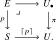
Terminology 8.3.2. We say that the category \(U\) classifies \(U\)-small cocartesian fibrations, and that the fibration \(\pi\colon U_{\bullet} \to U\) is the universal \(U\)-small cocartesian fibration.
Observe that the category \(U \times U\) classifies pairs of \(U\)-small cocartesian fibrations:
Observation 8.3.3. Let \(S\) be a category equipped with two \(U\)-small cocartesian fibrations \(p_1\colon E_1 \to S\) and \(p_2\colon E_2 \to S\), classified by functors \(\lceil p_1 \rceil, \lceil p_2 \rceil\colon S \to U\). Then \(p_1\) and \(p_2\) may be obtained via pullback from the functors \(\pi \times \id\colon U_{\bullet} \times U \to U \times U\) and \(\id \times \pi\colon U \times U_{\bullet} \to U \times U\):
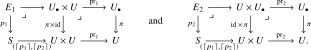
Observation 8.3.4. Given the pair of cocartesian fibrations \(\pi \times \id\colon U_{\bullet} \times U \to U \times U\) and \(\id \times \pi\colon U \times U_{\bullet} \to U \times U\), Definition 3.5.10 provides a category \(\ulFun_{U \times U}(U_{\bullet} \times U, U \times U_{\bullet})\) equipped with a functor \[ \ulFun_{U \times U}(U_{\bullet} \times U, U \times U_{\bullet}) \to U \times U. \] Given a category \(S\), it follows from Remark 3.5.11 that the data of a functor \(S \to \ulFun_{U \times U}(U_{\bullet} \times U, U \times U_{\bullet})\) is the same as the data of a functor \((\lceil p_1 \rceil,\lceil p_2 \rceil)\colon S \to U \times U\) together with a functor \(E_1 \to E_2\) over \(S\) between the cocartesian fibrations \(p_1\colon E_1 \to S\) and \(p_2\colon E_2 \to S\) classified by \(\lceil p_1 \rceil\) and \(\lceil p_2 \rceil\). In other words: the category \(\ulFun_{U \times U}(U_{\bullet} \times U, U \times U_{\bullet})\) classifies functors between two \(U\)-small cocartesian fibrations.
Observation 8.3.5. Consider the subcategory \[ \ul{\CoCart}_{U \times U}(U_{\bullet} \times U, U \times U_{\bullet}) \subseteq \ulFun_{U \times U}(U_{\bullet} \times U, U \times U_{\bullet}) \] of cocartesian functors over \(U \times U\), defined in Definition 8.1.10. By Proposition 8.1.13, a functor \(S \to \ulFun_{U \times U}(U_{\bullet} \times U, U \times U_{\bullet})\) factors through this subcategory if and only if the functor \(E_1 \to E_2\) over \(S\) from Observation 8.3.4 is a cocartesian functor over \(S\). In other words: the category \(\ul{\CoCart}_{U \times U}(U_{\bullet} \times U, U \times U_{\bullet})\) classifies cocartesian functors between two \(U\)-small cocartesian fibrations.
Remark 8.3.6. Recall from Observation 3.5.12 and Corollary 8.1.14 that the constructions \(\ulFun\) and \(\ul{\CoCart}\) are compatible with pullbacks. It thus follows that for any pair \((p_1,p_2)\) of \(U\)-small cocartesian fibrations over \(S\), classified by functors \(\lceil p_1 \rceil, \lceil p_2 \rceil \colon S \to U\), there are pullback squares of the form
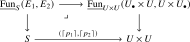 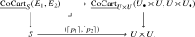
Using this remark, we may be more precise about the way that the category \(\ul{\CoCart}_{U \times U}(U_{\bullet} \times U, U \times U_{\bullet})\) ‘classifies’ cocartesian functors between two cocartesian fibrations.
Definition 8.3.7. Write \(T := \ul{\CoCart}_{U \times U}(U_{\bullet} \times U, U \times U_{\bullet})\) for short. Define cocartesian fibrations \(\overline{\pi}_1\colon \overline{U}_1 \to T\) and \(\overline{\pi}_2\colon \overline{U}_2 \to T\) via the following pullback squares:
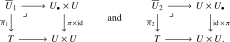 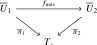
Lemma 8.3.8. Let \(p_1\colon E_1 \to S\) and \(p_2\colon E_2 \to S\) be two \(U\)-small cocartesian fibrations, and let \(f\colon E_1 \to E_2\) be a cocartesian functor over \(S\). Then there exists a functor \(\lceil f \rceil \colon S \to T := \ul{\CoCart}_{U \times U}(U_{\bullet} \times U, U \times U_{\bullet})\) such that \(f\) is the base change of \(f_{\univ}\) along \(\lceil f \rceil\):
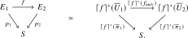
Proof
We saw in Observation 8.3.5 that the cocartesian functors between \(U\)-small cocartesian fibrations over a category \(S\) are classified by functors \(S \to T = \ul{\CoCart}_{U \times U}(U_{\bullet} \times U, U \times U_{\bullet})\). This process is functorial in \(S\): given functors \(\phi\colon S \to S'\) and \(\psi\colon S' \to T\), the cocartesian functor over \(S\) classified by the composite \(\psi \circ \phi\colon S \to T\) is obtained from the one over \(S'\) classified by \(\psi\) by pulling back along \(\phi\). Taking \(S' = T\) now gives the claim.
8.3.2 Directed univalence
We now make the guiding idea precise, still fixing a cocartesian fibration \(\pi\colon U_{\bullet} \to U\). A morphism \(c \to d\) in \(U\) may be regarded as a functor \([1] \to U\). Pulling back \(\pi\) along this functor gives a \(U\)-small cocartesian fibration over \([1]\), whose straightening is a functor \(C \to D\) between the \(U\)-small categories classified by \(c\) and \(d\). Applying this construction to the family of all morphisms in \(U\) produces the comparison functor used in the definition.
Construction 8.3.9 (Universal straightening). Let \(\pi\colon U_{\bullet} \to U\) be a cocartesian fibration. We will construct a straightening functor
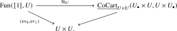 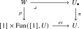 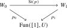 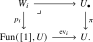 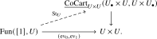
Definition 8.3.10 (Directed univalence). A cocartesian fibration \(\pi\colon U_{\bullet} \to U\) is called directed univalent if the functor \(\St_U\colon \Fun([1],U) \to \ul{\CoCart}_{U \times U}(U_{\bullet} \times U, U \times U_{\bullet})\) is an equivalence.
Perhaps the most important consequence of directed univalence is that it provides a translation between morphisms in \(U\) and functors of \(U\)-small categories. To see this, consider two objects \(c\) and \(d\) of \(U\), and consider their corresponding \(U\)-small categories \(C\) and \(D\):
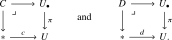
Corollary 8.3.11. Let \(\pi\colon U_{\bullet} \to U\) be a directed univalent cocartesian fibration. For every pair of objects \(c\) and \(d\) of \(U\) with corresponding \(U\)-small categories \(C\) and \(D\), the induced map \[ \Hom_U(c,d) \to \Map(C,D) \] is an equivalence of animae.
In other words, morphisms in \(U\) from \(c\) to \(d\) are nothing but functors from \(C\) to \(D\). It then follows from Proposition 8.2.6 and Lemma 8.2.5 that under this correspondence identities and compositions in \(U\) correspond to identity functors and composition of functors. All in all we get the following dictionary:
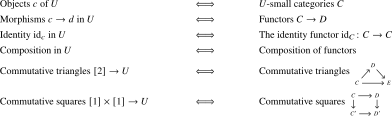
8.3.3 Consequences of directed univalence
We continue to fix a directed univalent cocartesian fibration \(\pi\colon U_{\bullet} \to U\). We draw three consequences from directed univalence. First, it identifies natural transformations between classifying functors with cocartesian functors between the corresponding families. Second, it shows that a small structure on a cocartesian fibration is a property. Finally, it implies univalence in Voevodsky’s sense.
Definition 8.3.12. Consider two cocartesian fibrations \(p_0\colon E_0 \to S\) and \(p_1\colon E_1 \to S\). We define the cocartesian mapping anima over \(S\) as
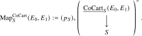
Lemma 8.3.13. Given two left fibrations \(p_0\colon X_0 \to S\) and \(p_1\colon X_1 \to S\), the inclusion \[ \Map^{\CoCart}_S(X_0,X_1) \hookrightarrow \Map_S(X_0,X_1) \] is an equivalence.
Proof
This is an immediate consequence of Lemma 8.1.12.
Now assume that the cocartesian fibrations \(p_i\colon E_i \to S\) are \(U\)-small: there are functors \(F_i\colon S \to U\) for \(i = 0,1\) and pullback squares
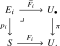
Lemma 8.3.14. Given functors \(F_0,F_1\colon S \to U\), the fiber of the functor \[ \Fun(S, \CoCart_{U \times U}(U_{\bullet} \times U, U \times U_{\bullet})) \to \Fun(S, U) \times \Fun(S, U) \] at the pair \((F_0,F_1)\) is \(\Map_S^{\CoCart}(E_0,E_1)\).
Proof
The fibers of this functor are animae: indeed, we are considering the fibers of a functor equivalent to \[ \Fun(S,\Fun([1],U))\simeq\Fun([1],\Fun(S,U))\to\Fun(S,U)\times\Fun(S,U)\, , \] and since the latter is known to be conservative, this proves our claim. Consider an anima \(\Gamma\). Then a map \(\Gamma \to \Map_S^{\CoCart}(E_0,E_1)\) corresponds by definition to a cocartesian functor \(f\colon \Gamma \times E_0 \to \Gamma \times E_1\) over \(\Gamma \times S\).
On the other hand, a map from \(\Gamma\) to the fiber is given as a map \(Y_0 \to Y_1\) over \(\Gamma \times S\) together with a proof that it is a cocartesian functor over \(\Gamma \times S\), where \(Y_0\) and \(Y_1\) are defined via the pullback squares
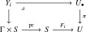
Theorem 8.3.15. For \(U\)-small cocartesian fibrations \(p_i\colon E_i \to S\) classified by functors \(F_i\colon S \to U\), there is an equivalence of animae \[ \Hom_{\Fun(S,U)}(F_0,F_1) \iso \Map_S^{\CoCart}(E_0,E_1). \]
Proof
By definition, the hom anima \(\Hom_{\Fun(S,U)}(F_0,F_1)\) is defined via the following pullback square:
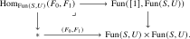 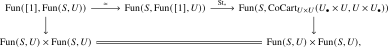
Corollary 8.3.16. For \(U\)-small cocartesian fibrations \(p_i\colon E_i \to S\) classified by functors \(F_i\colon S \to U\), the equivalence of Theorem 8.3.15 restricts to an equivalence of animae \[ \Fun(S,U)^\simeq(F_0,F_1) \iso \Equiv_S(E_0,E_1). \]
Proof
Let \(u\colon E_0 \to E_1\) be an equivalence over \(S\), with inverse \(v\colon E_1 \to E_0\). Both are cocartesian functors by Corollary 4.7.5, and hence correspond to natural transformations \(\varphi\colon F_0 \to F_1\) and \(\psi\colon F_1 \to F_0\). Compatibility of straightening with composition, Proposition 8.2.6, shows that \(\varphi\circ\psi\) and \(\psi\circ\varphi\) are identified with the respective identity transformations. Thus \(\varphi\) is a natural isomorphism.
Conversely, let \(\varphi\colon F_0 \to F_1\) be a natural isomorphism, with inverse \(\psi\). Under Theorem 8.3.15, these transformations correspond to cocartesian functors \(u\colon E_0 \to E_1\) and \(v\colon E_1 \to E_0\). Compatibility with composition and identities shows that \(u\circ v\) and \(v\circ u\) are identified over \(S\) with the respective identity functors. Therefore \(u\) is an equivalence over \(S\).
Definition 8.3.17 (\(U\)-small structures). Let \(p\colon C \to S\) be a cocartesian fibration. We define the anima of \(U\)-small structures on \(p\) by \[ \mathrm{Small}_U(p) := \sum_{F : \Fun(S,U)^\simeq} \Equiv_S\bigl(C,F^*U_{\bullet}\bigr). \] Thus a term consists of a functor \(F\colon S \to U\) and an equivalence over \(S\) from \(C\) to the pullback of \(U_{\bullet}\) along \(F\). Equivalently, it is a \(U\)-small structure in the sense of Definition 8.3.1.
Theorem 8.3.18 (Smallness is a property). Let \(\pi\colon U_{\bullet} \to U\) be directed univalent, and let \(p\colon C \to S\) be a cocartesian fibration. The canonical functor \[ \mathrm{Small}_U(p) \to * \] is an embedding. If \(p\) is \(U\)-small, then \(\mathrm{Small}_U(p)\) is contractible.
Proof
Consider two terms \((F,e)\) and \((F',e')\) of \(\mathrm{Small}_U(p)\). Their mapping anima in \(\mathrm{Small}_U(p)\) is the fiber over the equivalence \(e'\circ e^{-1}\) of the equivalence \[ \Fun(S,U)^\simeq(F,F') \iso \Equiv_S(F^*U_{\bullet},F'^*U_{\bullet}) \] from Corollary 8.3.16. This fiber is contractible. The same argument applies in every anima context, so \(\mathrm{Small}_U(p) \to *\) is an embedding by Proposition 1.6.20. If \(p\) is \(U\)-small, then this embedding has a section, so it is an equivalence by Lemma 1.6.24.
Remark 8.3.19 (Directed univalence implies ordinary univalence). The preceding theorem has the following universal form. Consider the diagram
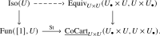 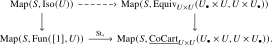
The equivalence
\[
\Iso(U) \iso\Equiv_{U \times U}(U_{\bullet} \times U, U \times U_{\bullet})
\]
precisely means that the cocartesian fibration \(\pi\colon U_{\bullet} \to U\) is univalent in Voevodsky’s sense.
In practical terms, this is the precise way to say that there is a correspondence between
\(U\)-small cocartesian fibrations of the form \(p\colon X\to S\) and functors
of the form \(F\colon S\to U\): given a pullback square of the form
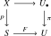